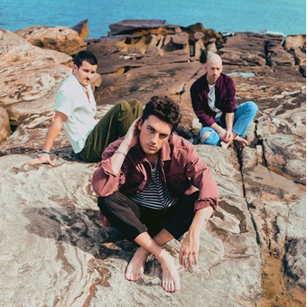

LANY
LANY is an American pop band celebrated for their dreamy soundscapes, heartfelt lyrics, and relatable themes. Known for blending synth-pop, indie, and alternative influences, they create music that resonates deeply with fans through its emotional honesty and atmospheric vibes.
Top Songs
Immerse yourself in LANY's top tracks, from emotional ballads to feel-good anthems. Songs like "ILYSB," "Malibu Nights," and "Super Far" capture the essence of love, heartbreak, and self-reflection, making their music universally cherished.

Cause You Have To
13

Malibu Nights